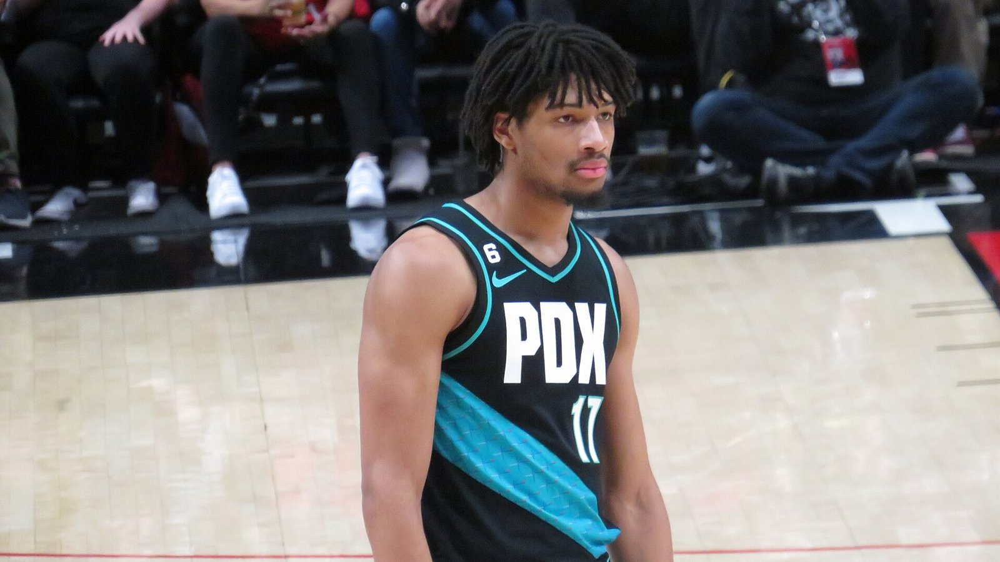

シェイドン・シャープが右膝半月板損傷 —— ブレイザーズの23歳、全治6ヶ月で2026-27シーズン大半を欠場へ
ポートランド・トレイルブレイザーズのシェイドン・シャープ(23)が右膝の半月板を損傷し、全治6ヶ月の見通しであることが分かった。ESPNのシャムズ・チャラニア氏が情報筋の話として8月24日に報じた。

オフシーズンのワークアウト中に負傷
ESPNによると、負傷は最近のオフシーズンのワークアウト中に発生したもので、シャープは2026-27シーズンのかなりの期間を欠場する見通しだという。
前季も左脛骨腓骨の疲労骨折で長期離脱、2年連続の離脱に
シャープは前シーズン平均20.8得点を記録したが、左腓骨の疲労骨折でシーズンの大部分を欠場していた。今回の右膝の負傷により、2シーズン連続で長期離脱を強いられることになる。
モラント、リラード、ホリデーの3ベテランガードが穴を埋める布陣
ブレイザーズは今季、ジャ・モラント、デイミアン・リラード、ジュラン・ホリデーとベテランガード3人をロースターに擁しており、シャープ不在の間もバックコートの層の厚さで補える体制になっているとESPNは伝えている。
昨年締結の4年9000万ドル延長契約が今季から発効
シャープは昨年、ブレイザーズと4年9000万ドルの契約延長に合意しており、その契約が今季から正式に発効する。2026-27シーズンの年俸は約2000万ドルの見込みだという。
出典: ESPN「Sources: Blazers' Sharpe to miss 6 months with meniscus tear」
https://www.espn.com/nba/story/_/id/49715231/sources-blazers-sharpe-miss-6-months-meniscus-tear